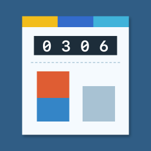

値上がりか使いすぎか分かる光熱費
去年より高いのは、値上がりのせい？使いすぎのせい？ 差を2つに分けて見せます。
電気・ガス・水道・灯油の検針票の、金額と使った量（kWh・㎥・L）を月ごとに入れる記録です。
- 去年との差を2つに分ける。去年の同じ月との金額の差を「使った量で ＋◯円」「単価で ＋◯円」に分け、「値上がりのせいが大きい」「使った量がふえたせいが大きい」と1行で見せます。2つを足すと、差にぴったりなります
- 単価の移り変わり。1kWh・1㎥ あたりの金額を線で見せます
- 2年の棒。今年と去年の月ごとの金額を並べ、1年の合計も出します
- 使った日数を入れると、1日あたりの量も分かります
- 登録・課金はありません。記録はこの端末の中だけに保存します。画面のいちばん下に小さな広告が出ます（数字を打っている間は出しません）